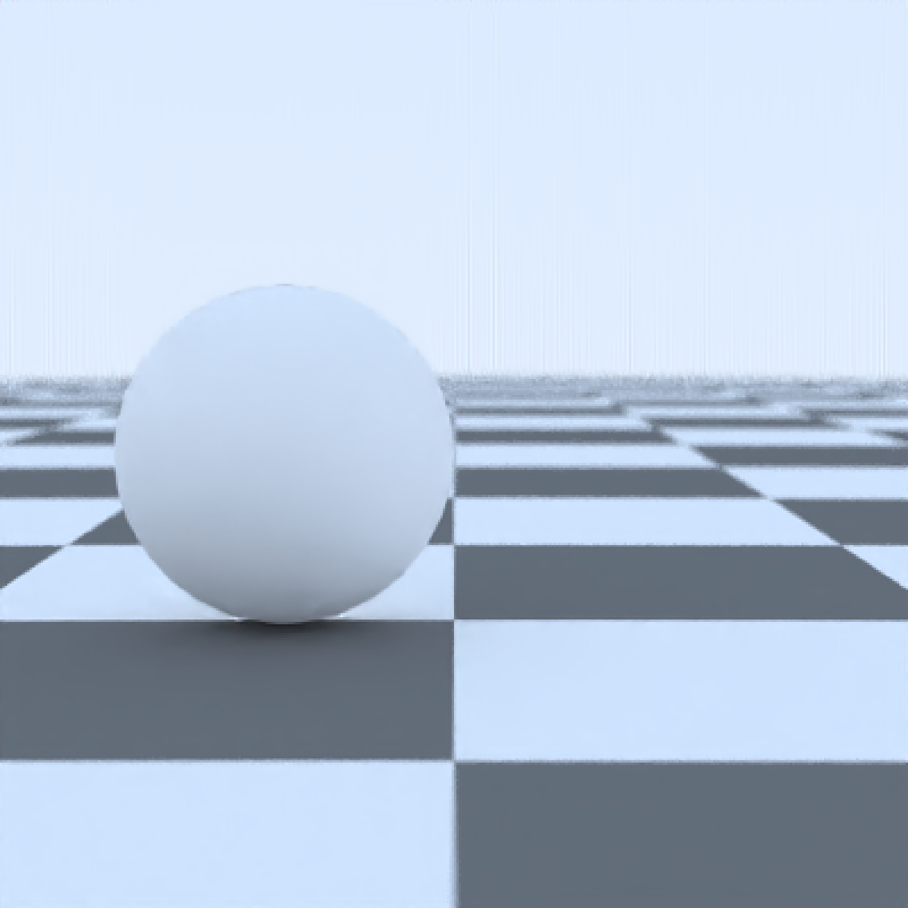
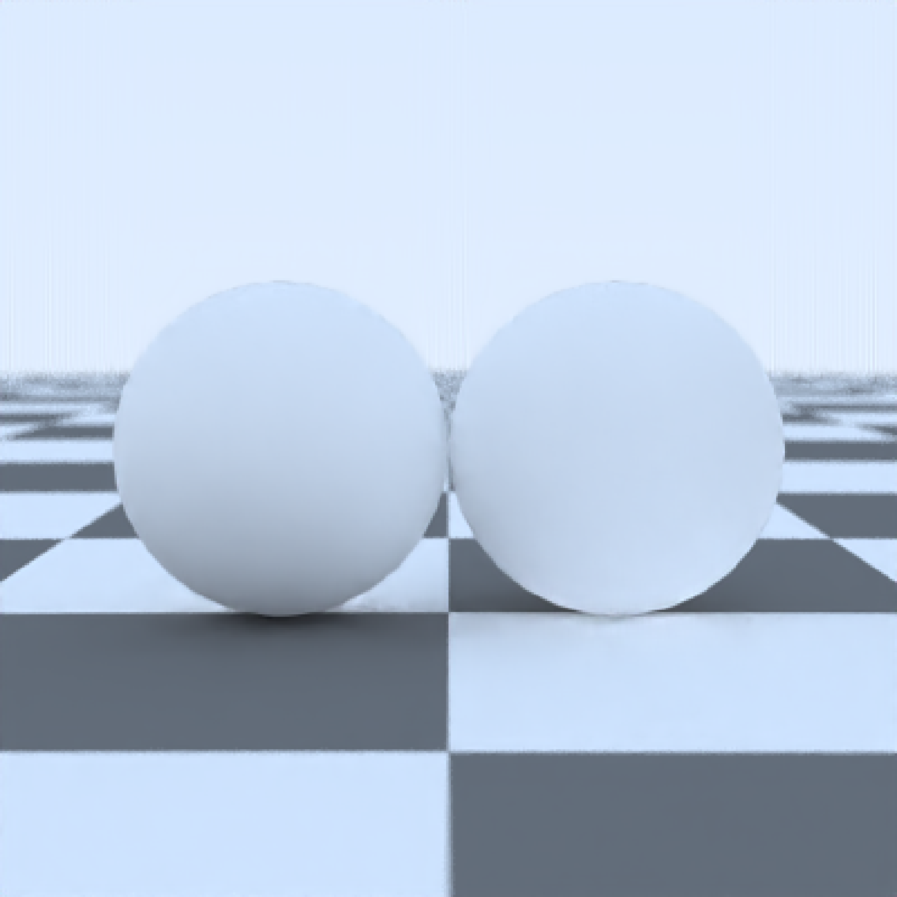
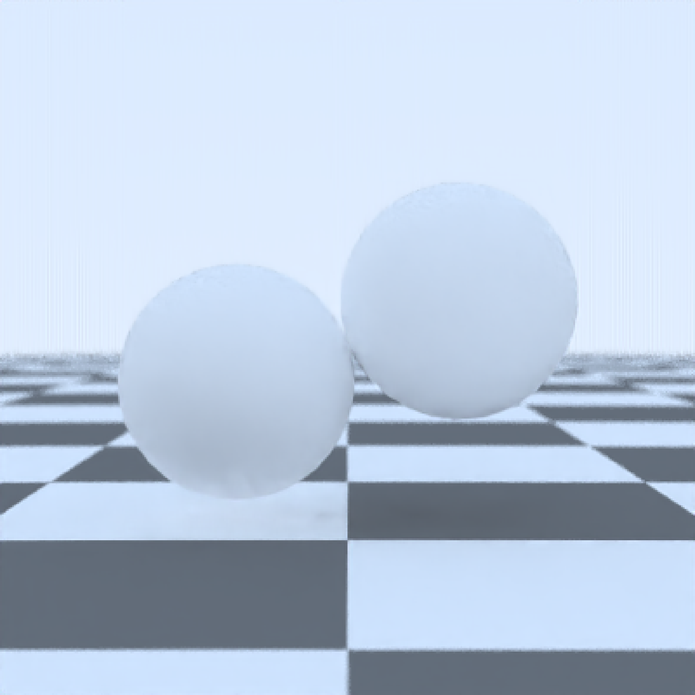

Load an `raymesh` object, as specified in the `rayvertex` package.
raymesh_model(
mesh,
x = 0,
y = 0,
z = 0,
flip_transmittance = TRUE,
verbose = FALSE,
importance_sample_lights = FALSE,
calculate_consistent_normals = TRUE,
subdivision_levels = 1,
displacement_texture = "",
displacement_intensity = 1,
displacement_vector = FALSE,
recalculate_normals = FALSE,
override_material = TRUE,
material = diffuse(),
angle = c(0, 0, 0),
order_rotation = c(1, 2, 3),
flipped = FALSE,
scale = c(1, 1, 1),
validate_mesh = TRUE
)A `raymesh` object. Pulls the vertex, index, texture coordinates, normals, and material information.
Default `0`. x-coordinate to offset the model.
Default `0`. y-coordinate to offset the model.
Default `0`. z-coordinate to offset the model.
Default `TRUE`. Flips `(1-t)` the transmittance values to match the way the colors would be interpreted in a rasterizer (where it specifies the transmitted color). Turn off to specify the attenuation values directly.
Default `FALSE`. If `TRUE`, prints information about the mesh to the console.
Default `TRUE`. Whether to importance sample lights specified in the OBJ material (objects with a non-zero Ke MTL material).
Default `TRUE`. Whether to calculate consistent vertex normals to prevent energy loss at edges.
Default `1`. Number of Loop subdivisions to be applied to the mesh.
Default `""`. File path to the displacement texture. This texture is used to displace the vertices of the mesh based on the texture's pixel values.
Default `1`. Intensity of the displacement effect. Higher values result in greater displacement.
Default `FALSE`. Whether to use vector displacement. If `TRUE`, the displacement texture is interpreted as providing a 3D displacement vector. Otherwise, the texture is interpreted as providing a scalar displacement.
Default `FALSE`. Whether to recalculate vertex normals based on the connecting face orientations. This can be used to compute normals for meshes lacking them or to calculate new normals after a displacement map has been applied to the mesh.
Default `TRUE`. If `TRUE`, overrides the material specified in the `raymesh` object with the one specified in `material`.
Default diffuse, but ignored unless `override_material = TRUE`. The material, called from one of the material
functions diffuse, metal, or dielectric.
Default `c(0, 0, 0)`. Angle of rotation around the x, y, and z axes, applied in the order specified in `order_rotation`.
Default `c(1, 2, 3)`. The order to apply the rotations, referring to "x", "y", and "z".
Default `FALSE`. Whether to flip the normals.
Default `c(1, 1, 1)`. Scale transformation in the x, y, and z directions. If this is a single value, number, the object will be scaled uniformly. Note: emissive objects may not currently function correctly when scaled.
Default `TRUE`. Validates the `raymesh` object using `rayvertex::validate_mesh()` before parsing to ensure correct parsing. Set to `FALSE` to speed up scene construction if `raymesh_model()` is taking a long time (Note: this does not affect rendering time).
Single row of a tibble describing the raymesh model in the scene.
#Render a simple raymesh object
library(rayvertex)
#>
#> Attaching package: ‘rayvertex’
#> The following objects are masked from ‘package:rayrender’:
#>
#> r_obj, run_documentation
if(run_documentation()) {
raymesh_model(sphere_mesh(position = c(-1, 0, 0),
material = material_list(transmittance = "red"))) %>%
add_object(generate_ground(material = diffuse(checkercolor="grey20"))) %>%
render_scene(fov = 30, samples=16, sample_method="sobol_blue")
}

# We create a complex rayvertex mesh, using the `rayvertex::add_shape` function which
# creates a new `raymesh` object out of individual `raymesh` objects
rm_scene = sphere_mesh(position = c(-1, 0, 0),
material = material_list(transmittance = "red")) %>%
add_shape(sphere_mesh(position = c(1, 0, 0),
material = material_list(transmittance = "green", ior = 1.5)))
# Pass the single raymesh object to `raymesh_model()`
# `raymesh_model()`
if(run_documentation()) {
raymesh_model(rm_scene) %>%
add_object(generate_ground(material = diffuse(checkercolor="grey20"))) %>%
render_scene(fov = 30, samples=16, sample_method="sobol_blue")
}

# Set `flip_transmittance = FALSE` argument to specify attenuation coefficients directly
# (as specified in the `dielectric()` material). We change the material's numerical attenuation
# constants using `rayvertex::change_material`
rm_scene_new= change_material(rm_scene, transmittance = c(1,2,0.3), id = 1) %>%
change_material(transmittance = c(3,1,2), id = 2)
if(run_documentation()) {
raymesh_model(rm_scene_new, flip_transmittance = FALSE) %>%
add_object(generate_ground(material = diffuse(checkercolor="grey20"))) %>%
render_scene(fov = 30, samples=16, sample_method="sobol_blue")
}
# Override the material specified in the `raymesh` object and render the scene
if(run_documentation()) {
raymesh_model(rm_scene,
material = dielectric(attenuation = "dodgerblue2", attenuation_intensity = 4),
override_material = TRUE) %>%
add_object(generate_ground(material = diffuse(checkercolor="grey20"))) %>%
render_scene(fov = 30, samples=16, sample_method="sobol_blue")
}
# Adjusting the scale, position, and rotation parameters of the `raymesh` model
if(run_documentation()) {
raymesh_model(rm_scene,
x = 0, y = 0.5, z = -1, angle = c(0, 0, 20)) %>%
add_object(generate_ground(material = diffuse(checkercolor="grey20"))) %>%
render_scene(fov = 30,lookat=c(0,0.5,0), samples=16, sample_method="sobol_blue")
}
